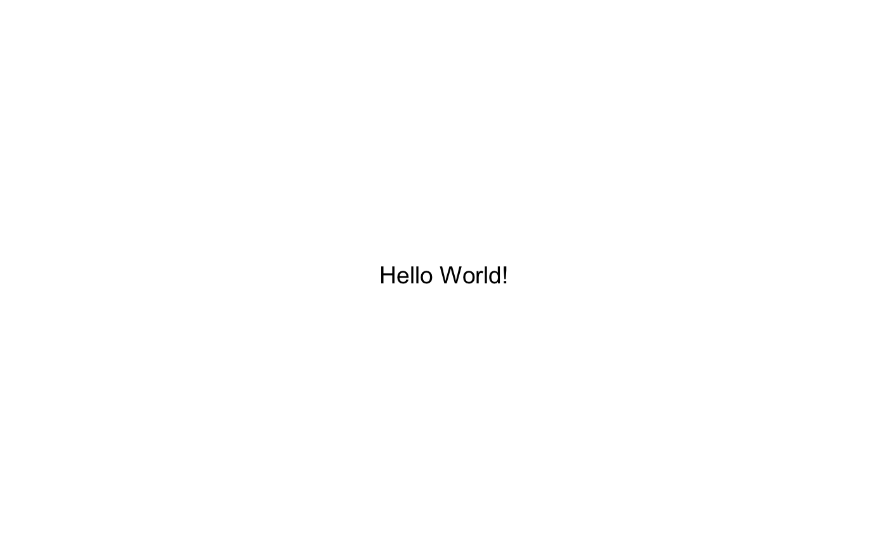
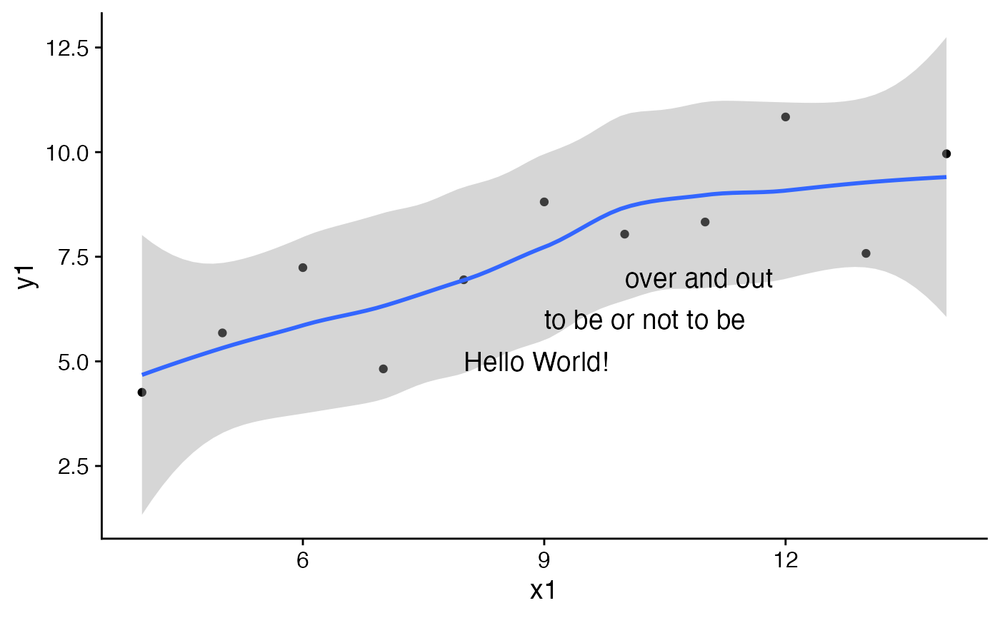

This is a convenience function to plot multiple pieces of text at the same time. It cannot
handle mathematical expressions, though. For those, use draw_label.
draw_text(text, x = 0.5, y = 0.5, size = 14, hjust = 0.5, vjust = 0.5, ...)
| text | A vector of Character (not expressions) specifying the string(s) to be written. |
|---|---|
| x | Vector of x coordinates. |
| y | Vector of y coordinates. |
| size | Font size of the text to be drawn. |
| hjust | (default = 0.5) |
| vjust | (default = 0.5) |
| ... | Style parameters, such as |
Note that font sizes are scaled by a factor of 2.85, so sizes agree with those of
the theme. This is different from geom_text in ggplot2.
By default, the x and y coordinates specify the center of the text box. Set hjust = 0, vjust = 0 to specify
the lower left corner, and other values of hjust and vjust for any other relative location you want to
specify.
For a full list of ... options, see geom_label.
# # Adorn a plot from the Anscombe data set of "identical" data. library(ggplot2) theme_set(theme_half_open()) p <- qplot(x = x1, y = y1, geom = c("smooth", "point"), data = anscombe) threeStrings <- c("Hello World!", "to be or not to be", "over and out") p + draw_text(threeStrings, x = 8:10, y = 5:7, hjust = 0)#>